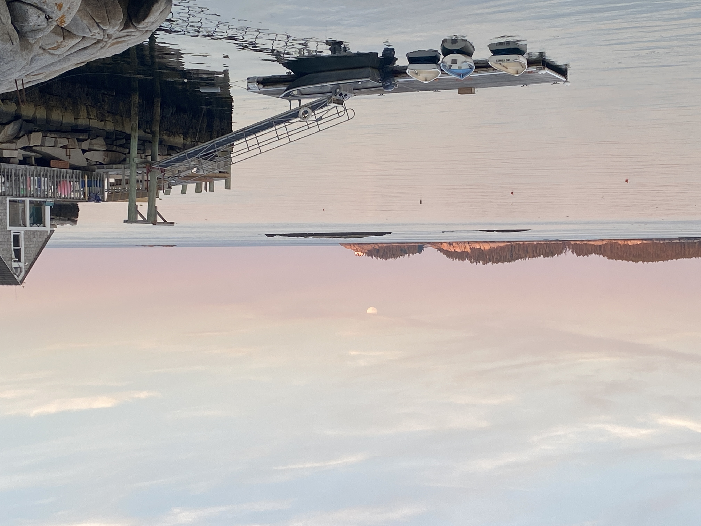

AmeriCorps • Maine Conservation Corps
Environmental Steward and Educator • Hurricane Island Center for Science and Leadership
Overview
During my AmeriCorps service term with the Maine Conservation Corps, I served as an Environmental Steward and Educator at the Hurricane Island Center for Science and Leadership.
My role centered on delivering place-based coastal and environmental science programming for students, particularly those with geographic or socioeconomic barriers to coastal and marine science, across Maine.
Day to Day Service
- Developed and taught coastal ecology and aquaculture lessons for middle‑school and high‑school students.
- Facilitated field‑based learning and research experiences on Hurricane Island’s intertidal zone.
- Led team building exercises and guided students in outdoor settings such as hiking, rock climbing, and swimming.
- Engaged with diverse community groups, including visiting land‑trust members, adult learners.
- Collaborated with educators, researchers, and island staff to support youth stewardship, education, and community engagement.
- Participated in MCC and AmeriCorps orientations, training, events, and conferences.
- Engage in volunteer management, including recruiting volunteers, promoting events, and managing volunteer activities.
Impact
My service strengthened my commitment to community‑centered environmental research and education.
Give some hard core numbers..... (ex. how many students / communities served; where they were from (a map?)
Volunteer impact numbers
Photo Highlights
Here are a few representative images you can replace with your own:
